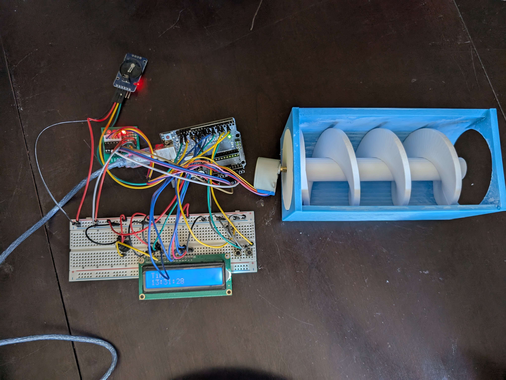

SOLIDWORKS DESIGN
Concept Animation
Engineering Design & Motion Analysis
The complete dog feeder assembly was designed in SolidWorks with comprehensive motion studies focused on utilizing the built-in Motor and Gravity functions to ensure the design would work as intended in a theoretical sense.
Design Improvements Implemented:
- Gear Reduction System: Implemented a 2:1 gear train to multiply torque while maintaining precision
- Redesigned auger mechanism to work with the new gear system
- Verified through motion studies that the solution provided reliable operation
- Optimized hopper geometry to prevent food jams while ensuring consistent flow
PROTOTYPE
Physical Implementation

Functional Prototype
The physical prototype implements the gear solution identified in the SolidWorks analysis, successfully resolving the power deficiency while adding these features:
Technical Specifications:
- Arduino-controlled stepper motor with gear reduction system
- 3D-printed structural components and custom single-stage gear train gear train
- Programmable feeding schedule with portion control
Prototype Demonstration
Development Process
The prototype went through several iterations to achieve optimal performance, with particular attention to the gear system:
Key Achievements:
- Power Solution: The gear system provides consistent torque without motor strain
- Eliminated food jams through optimized auger design
- Precise feeding times using a DS3231 RTC module for reliable timekeeping in the Arduino circuit